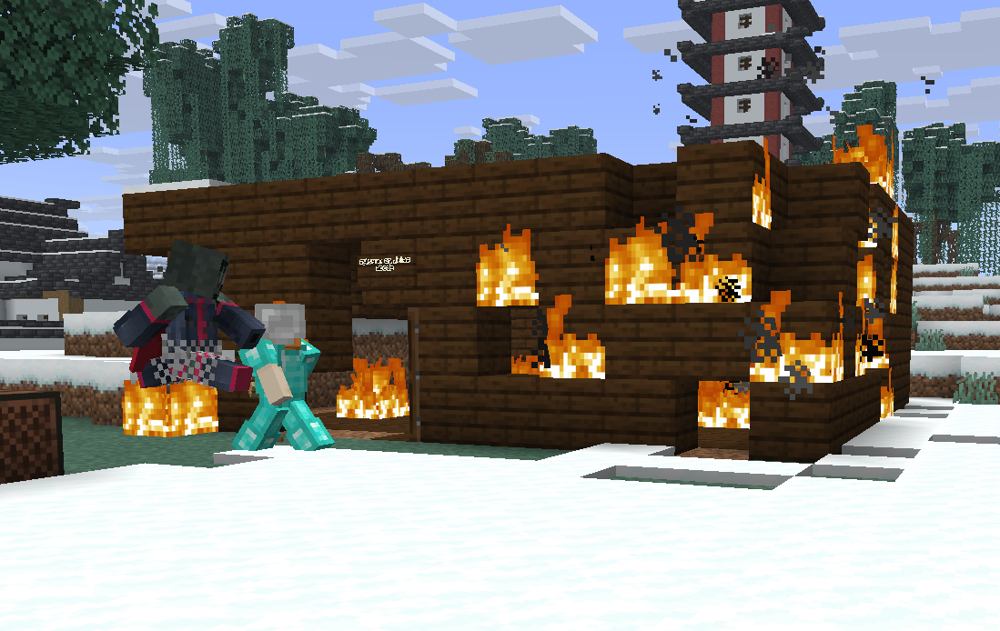

Kyra redt een bijna mislukte Wither-jacht en geeft de Nether Star aan AdroitCoyote. De server verwelkomt nieuwe gezichten, bouwt aan een multiculturele samenleving en legt een ijsbrug aan. De tijdelijke eensgezindheid rond Jules' huis pakt iets minder vreedzaam uit.
Door de redactie//Een bewogen serverdag
Hoofdnieuws / Burgerheldin
Drie spelers roepen de Wither op. Kyra maakt het af.
BOSSNIEUWS: De dag begon met een overzichtelijk plan. AdroitCoyote, Kyan10102 en WaffleUser summonden de Wither om zijn Nether Star te bemachtigen. Even een boss verslaan, buit ophalen en weer verder. Op papier een uitstekend idee.
In de praktijk liep het bijna fout af. De Wither bleek weinig belangstelling te hebben voor de afgesproken rol van makkelijke leverancier van een ster. Het drietal had een probleem opgeroepen dat zich niet beleefd liet wegsturen.
Gelukkig kwam Kyra ten redding. Ze greep in en versloeg de boss, waarmee de onderneming alsnog een goed einde kreeg. De redactie constateert dat het oproepen van gevaar en het daadwerkelijk oplossen ervan vandaag keurig over verschillende spelers waren verdeeld.
Daar bleef het niet bij. Als de voorbeeldige citizen die ze is, gaf Kyra de Nether Star aan AdroitCoyote. De overwinning op haar naam, de buit naar een ander. Na de verlieslijst uit de vorige editie is dat een behoorlijk royaal gebaar.
De redactie stelt een onderscheiding voor wegens uitzonderlijke dienstverlening aan spelers die zelf een Wither hebben gesummond. Voorlopig moet Kyra het doen met deze buitengewoon objectieve voorpagina.
Nieuwe gezichten / Een vertrouwde terugkeer
Welkom vox10755416 en Julesdebul10, welkom terug Mithea!
BEVOLKINGSZAKEN: Er zijn opnieuw nieuwe gezichten opgedoken. vox10755416, verderop in deze krant ook Vox genoemd, en Julesdebul10 hebben zich bij de server gevoegd. We heten jullie van harte welkom!
Ook Mithea is teruggekeerd na een tijd weg te zijn geweest. Een bekend gezicht van de oude server, nu weer van de partij in de nieuwe wereld. Fijn dat je er weer bent.
Er wordt gebouwd, er worden bosses verslagen en er zijn inmiddels genoeg buurten om een eigen stijl te kiezen. Een rustige kennismaking kunnen we na deze editie moeilijk beloven, maar aan gezelschap ontbreekt het zeker niet.
Bouw & cultuur
Vier bouwstijlen, één server: de multiculturele samenleving krijgt vorm
STADSBEELD: Er is een multiculturele samenleving in opkomst op de server. De bouwers geven hun eigen draai aan de wereld, waardoor de ene buurt straks zomaar een heel ander karakter kan hebben dan de volgende.
DutchMapping richt zich vooral op een Japanse stijl.
Lausgamer houdt zich bezig met de Chinese infrastructuur.
Inkriin en Kyra zijn de Nordics van deze server en vertegenwoordigen de Noordse bouwrichting.
Vox werkt aan zijn eigen speciale stijl: de Palmen-stijl.
Japanse invloeden, Chinese infrastructuur, een Noordse hoek en een bouwstijl met een geheel eigen naam: de server krijgt steeds meer karakter. Vox heeft de naamgeving alvast geregeld; de rest van ons mag ontdekken hoe zijn Palmen-stijl zich verder ontwikkelt.
De redactie ziet een mooie toekomst voor deze verzameling bouwtradities. Over de vraag hoeveel verschillende stijlen de lokale welstandscommissie precies verdraagt, verwijzen we voorzichtig naar het volgende artikel.
Buurtzaken / Collectieve misdaad
Server tijdelijk herenigd tegen Jules' huis
BIJ JULES THUIS: De server heeft zijn verschillen tijdelijk opzijgezet om samen een misdaad te plegen op het huis van Julesdebul10. De aanleiding was een bijzonder vernietigend architectonisch oordeel: het huis was tyfus lelijk.
Waar Japanse, Chinese, Noordse en Palmen-invloeden nog prima naast elkaar kunnen bestaan, bracht dit ene bouwwerk de gemeenschap tot een opvallend eensgezind optreden. Het aangeleverde beeld laat weinig ruimte voor een vriendelijke omschrijving van die bouwkundige ingreep: de houten woning staat in brand.

De gezamenlijke bouwkeuring Jules' huis tijdens de actie. Aangeleverde screenshot van de server.
De redactie noteert een ongekende hoeveelheid saamhorigheid en een buitengewoon ongunstige dag voor houten gevels. De ontvangst van onze nieuwe buur bleek daarmee wel erg warm. Een subtiel briefje met verbouwsuggesties had vermoedelijk minder rook opgeleverd.
Infrastructuur / Verbinding
Nether ice bridge verbindt Kyans basis met de main city
VERKEER & VERVOER: Er is ook gebouwd aan iets dat de server op een minder brandbare manier bij elkaar brengt: een nether ice bridge. De nieuwe ijsbrug verbindt Kyans basis met de main city.
Daarmee heeft de route tussen Kyan10102 en het stadsleven een vaste verbinding door de Nether gekregen. Naast alle individuele bouwstijlen groeit dus ook de infrastructuur die de verschillende plekken met elkaar verbindt.
Een verslagen Wither, nieuwe buren, vier bouwrichtingen en een ijsbrug. Er is genoeg vooruitgang om over te schrijven. Jules zou vermoedelijk een iets andere samenvatting van de dag geven.
Voor Volk en Vaderland. En voor een brandverzekering op je starterhuis.
Aan de redactietafel
Jouw kant van het verhaal? Laat een reactie achter met je GitHub-account.